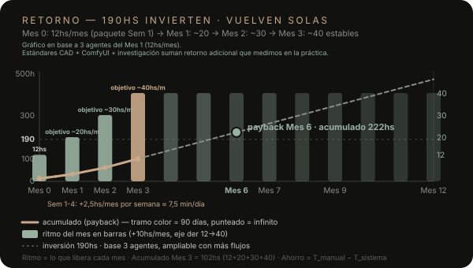

Investigamos cómo trabajan BIG, Foster + Partners y ZHA con sus labs internos y lo traemos a escala de tu estudio: co-construimos con tus casos reales. Lo específico queda tuyo y local; lo que funciona avanza hacia sistema que queda andando.
“YES is MORE” — Bjarke Ingels (BIG).
Utopía pragmática: la arquitectura avanza cuando combina imaginación ambiciosa con lo que el mundo ya permite construir. Utopía = soñar en grande, sin recortar la idea. Pragmatismo = construirlo con lo disponible hoy. Este programa avanza con esa misma lógica.
El tiempo se rediseña: distancia cero, velocidad industrial, un solo ritmo.
La Revolución Industrial midió el tiempo en turnos; la era online lo redujo a distancia cero. Hoy, la IA trae la velocidad industrial al estudio: flujos agénticos que aceleran decisiones con eficiencia. Y ante la irrupción de la IA 4.0, la tercera pata es humana: sincronización social — compartir la información con un orden común. Por eso trabajamos con Pomodoro (pomofocus.io): 25 minutos de foco, un solo tiempo de producción.
META = el sistema por encima del proyecto (cómo trabajamos).
ARQUITECTURA = el proyecto mismo (qué construimos).
Juntas son arquitectura de sistemas: diseñamos la forma de diseñar, y cada proyecto mejora EL siguiente.
HOY SE PUEDE: crear las propias herramientas
Antes se pedía un software y se esperaba años. Hoy se describe el flujo en palabras y sale un agente, un template, un tablero. El estudio deja de alquilar herramientas y empieza a construir las propias — simples, a medida, que quedan en casa.
AQUÍ ENTRA EL CONOCIMIENTO TÉCNICO DE PITAUTECH
Limitada, iterable, con supervisión
Hace lo acotado (transcribir, ordenar, buscar), con reglas escritas y revisión tuya. Primera función: recordar. Nunca decide sola el proyecto.
“¿Qué debería hacer una inteligencia artificial para que un arquitecto pueda dedicar más tiempo a pensar arquitectura?”
Método antes que herramientas.
Cuatro verbos y un loop, con documento vivo en Mes 1. Cada ITERACIÓN mejora el proceso, y eleva la práctica del Estudio — tangible, evaluable y abierto a debate.
Laboratorio embebido que co-construye adentro y deja sistema andando
Applied R+D
Investiga con cada equipo y convierte archivo de 600k+ en ML que libera rutina.
Design Technology
Define roadmap e integra IA en flujos diarios Rhino / Grasshopper / Revit.
CODE / ZHAI + Omniverse
Prototipa con archivo propio y lleva 10-15% de salidas a 3D.
Acá hacemos lo mismo a escala de tu estudio: observamos tu obra (Nayara), probamos con tus casos, medimos Ahorro = T_manual − T_sistema y dejamos Vault + agentes andando. Lo específico queda tuyo y local. (Foster Applied R+D · Towards AI in architecture)
la fricción — nombrar, ordenar, transcribir, buscar. Lo repetitivo avanza hacia sistema.
memoria y contexto — la Bóveda: cada decisión, plano y foto queda guardada y conectada.
horas de pensamiento creativo — ahí ninguna máquina reemplaza al arquitecto. Proyectar.
lo vivido vuelve al sistema — cada proyecto deja recetas que mejoran el siguiente.
Observar (cómo trabajas hoy) — Experimentar (hipótesis + demo) — Sistematizar (siempre auditable) — Aprender (objetivos y métricas).
Todo a la vista, nada en la cabeza
Cada tarea con responsable, fecha y estado. Así se ve:
Quitar desperdicio, no sumar trabajo
Si un paso no agrega valor (retrabajo, búsquedas eternas, copiar datos a mano), se elimina o se automatiza. Así aplica LEAN a nuestro método: menos desperdicio, más arquitectura.
Metodologías ágiles con entregables
Sprints cortos con entregable y debate franco: así trabajan los mejores. Ver Ágil en glosario.
El plan global. Y un ejemplo vivo.
90 días, ~64hs por mes. Primero el mapa completo; después, cómo se ve un día real con agentes.
Investigación y desarrollo con tu equipo, a escala de tu estudio
I+D embebido que co-construye con tu equipo: investigación guiada por proyectos reales, a la par de cada equipo, para liberar a los arquitectos hacia proyecto. Así trabaja Foster + Partners con su grupo Applied R+D (ex Specialist Modelling Group, desde 1997) (fosterandpartners.com). Acá hacemos lo mismo a escala de tu estudio: observamos tu obra, probamos con tus casos, medimos y dejamos el sistema andando. Lo específico (datos, clientes) queda local y tuyo; patrones genéricos avanzan al template. Decisiones en ADR con tu veto.
Global trimestral — +190hs ~
| Mes | Foco | Qué queda andando |
|---|---|---|
| 1 · OBSERVAR — ~64hs | ¿Cómo trabaja realmente el estudio? | Bóveda encendida + representación + estándares CAD sobre Nayara (Brasil) |
| 2 · EXPERIMENTAR — ~64hs | ¿Qué podemos transformar? | Primeras automatizaciones con ahorro medido + moodboards ComfyUI |
| 3 · SISTEMATIZAR — ~64hs | ¿Qué avanza hacia sistema? | Procesos verificados + documentación + roadmap 2027 |
Quick wins desde el Mes 1: no es solo observar — cada semana deja un entregable tangible.
Ejemplo vivo — agente FATHOM + CAL.COM [agendamiento de reuniones, transcripción y análisis automatizado]
Una reunión, de punta a punta, sin tocar nada a mano:
Por texto o por voz
“Creá una reunión con Emilia y Juan (mails) para el jueves a las 10, tema Nayara.” Listo, seguís dibujando.
Cal.com + Meet + invitaciones
El agente crea la reunión virtual, reserva sala y envía las invitaciones a cada invitado. Sin coordinar por chat.
Fathom transcribe
Terminada la reunión, el agente descarga la transcripción directo a la bóveda del estudio. Nada se pierde.
Digest + pasos a seguir
Un segundo agente analiza la reunión: resume lo decidido y extrae los pasos a seguir con responsables.
Tablero kanban con OKRs, milestones y sprints
Cada paso a seguir entra como tarea y subtarea, con tiempos y objetivos. El lunes el tablero ya dice quién hace qué.
- Observar — qué está ocurriendo.
- Preguntar — qué queremos mejorar.
- Hipótesis — qué creemos que podría funcionar.
- Investigar — qué tecnologías y métodos existen.
- Experimento — construir y probar el flujo.
- Resultado — qué ocurrió.
- Evaluar — impacto, esfuerzo, limitaciones.
- Protocolo — si funciona, escribirlo.
- Implementar — llevarlo al sistema real.
- Aprender — registrar qué se descubrió.
Mes 1: mirar, medir, implementación (dejarlo funcionando).
Objetivo mínimo: 16hs ~ / 20 días hábiles / mes — ejemplos reales: Nayara (representación y CAD) + MAGENTTA vinícola (investigación y moodboard).
Observar → preguntar → hipótesis → experimento → resultado → receta
Cada experimento genera conocimiento sobre una forma de trabajar. Lo que funciona avanza hacia protocolo y queda en la bóveda; lo que no, también se registra y se descarta sin culpa.
Semana por semana
| Semana | Qué avanza | Entregable |
|---|---|---|
| S1 · Vault / Obsidian — puesta en marcha del sistema ~16hs | Agenda de reuniones + transcripción automática a la bóveda, orden de archivos, instalación en tu PC + instalación de infraestructura y configuraciones técnicas (ver infraestructura) | Bóveda + 1 reunión muestra |
Agentes incluidos en la propuesta — agenda (Cal.com + Meet, 5hs de desarrollo, valorado en USD 50) · Fathom → bóveda (6hs, USD 60) · digest (4hs, USD 40) — total agentes valorados en USD 150*. | ||
| S2 · Representación arquitectónica — definición de standards GRAFICOS del estudio ~16hs | 20–30 referentes + demo de moodboard (MAGENTTA: investigación) | Carpeta + códigos visuales (futuro LoRa) |
| S3 · Estándares CAD ~16hs | Capas, bloques, bloques dinámicos, cotas + set láminas/rótulos, DWS/DWT (estándares y templates en AutoCAD) + NOTA quick win (sugerido, medir impacto), sobre Nayara | Estándares + fichas guía |
| S4 · Introducción ComfyUI, 1 flujo mínimo ~16hs | Introducción ComfyUI (1 flujo mínimo) + evaluación mensual + documentación y entregables que reducen la curva de aprendizaje de JRs + plan de implementación + roadmap | Flujo + doc + accesos + roadmap |
Entregable cada viernes
M1 (día 5) bóveda + primera reunión adentro · M2 (día 10) sistema visual validado · M3 (día 15) Nayara con estándares · M4 (día 20) todo enseñable + roadmap.
3 objetivos medibles
Adopción real (el estudio carga solo) · números reales (tiempos medidos, no estimados) · herramientas que liberan ≥12hs/mes ~ desde el día 20.
Reuniones: 1 reunión semanal online + 2 presenciales al mes — cronograma a coordinar con el cliente.
0.6h/día ~ ya liberada. Retorno para siempre.
Ahorro = T_manual − T_sistema · ROI = Ahorro_mes / T_invertido · Humano vs Máquina · Capacidad = Ahorro / 60hs.
Desglose — 3 flujos sin solaparse (cada minuto se cuenta una vez)
8 × 30min (15+15)
8 × 45min (60→15)
10 × 13min (15→2)
objetivo >=12hs/mes (3hs/sem medidos)
Nota: solo se mide el impacto de estos 3 agentes para tener una métrica posible.
El humano revisa, la máquina ejecuta
Buscar un plano: 15min a mano → 2min con bóveda (0.5 humano + 1.5 máquina). Ahorro: 13min por búsqueda.
Cada minuto queda registrado
Sherlock (búsqueda) · Fathom (captura + minuta + tareas) · Bóveda (carga a Leantime) · n8n (tiempo estimado).
Retorno para siempre — +190hs que vuelven solas

En Mes 6 recuperas la inversión (acumulado 222hs ≥ 190hs); desde Mes 3 el ritmo estable de ~40hs/mes permanece — las 12hs base siguen y cada mes suma +10hs nuevas (+2,5hs/mes por semana). Barras = ritmo del mes · línea = acumulado. Acumulado Mes 3 = 102hs (12+20+30+40). Ver payback en glosario.
INFRAESTRUCTURA PROPIA LISTA.
PITAUTECH aporta el servidor, las automatizaciones y los tableros ya instalados. El estudio solo suma su suscripción de IA y su cuenta de reuniones. Sin licencias sorpresa. A futuro (2027) puede evaluarse stack local del estudio + túnel + IA local para anonimato total (requiere mantenimiento IT por PITAUTECH).
VPS + n8n + Leantime + Bóveda
Servidor, base de datos, automatizaciones, tablero y bóveda ya instalados y mantenidos por PITAUTECH durante los 3 meses.
Reuniones + IA
Su cuenta de Google Meet (reuniones) + su suscripción OpenAI o IA que usen. Quedan a su nombre, PITAUTECH solo las conecta.
| Pieza (palabras simples) | Qué hace por vos | Si lo pagás en la nube | Acá |
|---|---|---|---|
|
C
VPS Contabo
— la compu encendida 24h
|
Guarda agentes, corre automatizaciones de noche — 4 vCPUs, 8 GB RAM y 100 GB SSD, relocalizado para menos latencia = más rápido | 8 USD/mes · Contabo | +PITAUTECH |
|
n8
n8n
— el cadete digital
|
Lleva y trae: reunión → minuta → tareas → agenda, solo | Starter €24/mes (2.500 ejecuciones) · Pro €60/mes (10.000) — n8n.io/pricing | Autohospedado, ilimitado · +PITAUTECH |
|
Pg
Postgres
— el archivo ordenado
|
Guarda tareas, proyectos y decisiones sin perder nada | — | Incluido en VPS · +PITAUTECH |
|
Re
Redis
— la memoria rápida
|
Los agentes responden al instante, hacen cola sin trabarse | — | Incluido en VPS · +PITAUTECH |
| Almacenamiento agentes — el placard | Fotos, planos, minutas y versiones, con espacio para crecer | ~5–10 USD/mes según uso | Incluido en VPS · +PITAUTECH |
| Flujos n8n — las recetas | Automatizaciones a medida del estudio, versionadas | — | PITAUTECH las construye · +mantenimiento |
|
Lt
Leantime + 1 asiento
— el tablero
|
Tareas, sprints y calendario en un solo lugar | Pro $10/usuario/mes ($8 anual) — leantime.io/pricing | Instalado + 1 asiento gratuito · +PITAUTECH |
|
Ob
Bóveda (Obsidian)
— la memoria
|
Todo buscable: reuniones, planos, referentes | Obsidian gratis (Sync opcional $4/mes, no requerido) | Instalada · PITAUTECH la deja andando |
|
Oc
OpenCode
— fábrica de agentes + vibecoding
|
Crea agentes a medida del estudio y desarrolla software con IA (vibecoding): minutas, automatizaciones y herramientas propias | ~10 USD/mes NOTA OPENCODE: +75 proveedores de LLM (OpenAI, Anthropic, Google) + modelos locales. |
Instalado local · +PITAUTECH |
|
Or
OpenRouter
— pago por uso
|
Acceso unificado a +400 modelos (OpenAI, Anthropic, Google, Meta) en una sola API: texto, imagen, audio, video y voz | Pago por uso (centavos por consulta) | +PITAUTECH |
| Antigravity + tu IA — tu lápiz | Editor + tu suscripción (ej. ChatGPT Plus ~20 USD/mes o API por uso) | ChatGPT Plus ~20 USD/mes o API por uso, según tu plan | PC LOCAL · PITAUTECH la conecta |
|
Cm
ComfyUI — el tablero de dibujo IA
|
Moodboards, imágenes y videos para arquitectura, con modelos IA locales | Gratis local · nube por uso (GPU) | PC LOCAL · +PITAUTECH |
|
Ca
Cal.com en VPS + tu cuenta — el secretario de reuniones
|
Link de reserva → se agenda solo → Meet → minuta a la bóveda, sin coordinar por chat | Teams $12/usuario/mes anual ($15 mensual) · Individual gratis — cal.com/pricing | Instalado en VPS + cuenta cliente · +PITAUTECH |
|
G
Cuenta Google del estudio — Drive + Calendar + Meet
|
Archivos, calendario y videollamadas donde ya trabajan | Gratis con cuenta Google | +ESTUDIO · PITAUTECH la conecta |
| Ahorro nube vs aportado | n8n €24–60 + Leantime $10 + Sync $4 + VPS $8 + OpenCode ~$10 + Cal.com $12 ≈ 65–110 USD/mes | que AHORRAS |
Todas las herramientas quedan conectadas en un ecosistema: se dejan de usar herramientas sueltas y dispersas.
Referencias: n8n.io/pricing (Starter €24/mes, Pro €60/mes, anual −17%) · leantime.io/pricing (Pro $10/usuario/mes, $8 anual) · Contabo VPS 8 USD · OpenCode ~10 USD · Cal.com Teams $12/usuario/mes anual. Precios públicos verificados sep-2026, pueden variar.
1.800 USD trimestrales. +190hs ~.
| Hito | Total | Cuándo | Fecha tentativa |
|---|---|---|---|
| Adelanto Mes 1 | USD 300 | Al firmar contrato de servicio (50%) | 16/09 |
| Fin Mes 1 | USD 600 | Cierre S4 + clase | 16/10 |
| Fin Mes 2 | USD 600 | Cierre Mes 2 | 16/11 |
| Saldo entregable | USD 300 | Entrega Mes 3 | 16/12 |
| TRIMESTRAL | ~USD 1.800 | 300/600/600/300 | - |
+ ABONAR en EFECTIVO / transferencia en pesos al cambio del día. (promedio dólar blue/oficial). *se emite factura C
* mantenimiento sistema bonificado.
* Fechas tentativas a definir por cliente.
Mantenimiento Sep/Oct/Nov + mediados Dic · Reunión continuidad 15 días antes del cierre · Modelos locales, trazabilidad con registro versionado · Contrato + política privacidad a enviar aceptada la propuesta
Glosario
16 palabras para hablar igual.